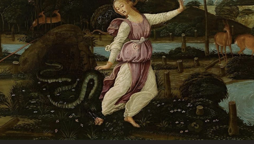

④ Dual coding
WD2_03.03.01 – situeren in tijd & ruimte

Sluipmoord
naar Vergilius, Georgica IV, 457–463 · de dood van Eurydice
① Voorkennis activeren
WD2_03.03.01 – situeren in tijd & ruimte
Context
Mythologische achtergrond
Orpheus, de legendarische dichter en citharaspeler, trouwde met de nimf Eurydice. Op hun trouwdag vluchtte Eurydice weg van Aristaeus, die haar achtervolgde. Daarbij werd ze gebeten door een slang en stierf. Vergilius vertelt dit verhaal in zijn Georgica (ca. 29 v.Chr.), een didactisch leerdicht over landbouw en bijenteelt. Het fragment beschrijft de fatale vlucht van Eurydice vanuit het perspectief van een aanklacht tegen Orpheus.
④ Dual coding
WD2_03.03.01 – situeren in tijd & ruimte
⑥ Check begrip hele klas
⑦ Scaffolding
WD2_03.02.01 – tekst begrijpen
WD2_03.02.02 – betekenis geven
⑦ Scaffolding → zelfstandig
WD2_03.02.01.02 – talige hulpmiddelen
⑤ Actieve verwerking
⑦ Scaffolding
WD2_03.02.01.01 – lectuurmethode toepassen
WD2_03.02.01 – tekst begrijpen
Lectuuranalyse — vraag bij dit vers
③ Voorbeelden & modelling
⑤ Actieve verwerking
WD2_03.02.01.01 – lectuurmethode toepassen
WD2_03.01.01 – taalsystematiek
v. 457
Illa quidem,
dum
te
fugeret
per flumina
praeceps,
v. 458
immanem
ante pedes
hydrum
moritura puella
v. 459
servantem
ripas
alta
non vidit
in herba.
v. 460
At
chorus aequalis Dryadum
clamore
supremos
v. 461
implerunt
montes;
flerunt
Rhodopeiae arces
v. 462
altaque Pangaea
et Rhesi mavortia tellus
v. 463
atque Getae
atque Hebrus
et Actias Orithyia.
457Illa quidem, dum te fugeret per flumina praeceps,
458immanem ante pedes hydrum moritura puella
459servantem ripas alta non vidit in herba.
460At chorus aequalis Dryadum clamore supremos
461implerunt montes; flerunt Rhodopeiae arces
462altaque Pangaea et Rhesi mavortia tellus
463atque Getae atque Hebrus et Actias Orithyia.
⑦ Scaffolding
⑪ Feedback die denken aanzet
WD2_03.01.01 – taalsystematiek
Grammaticale noten
1dum te fugeret per flumina praeceps — temporele bijzin met conjunctief imperfecti: gelijktijdigheid + causaliteit. Praeceps als predicatief attribuut bij illa staat ver van zijn nomen — bewust hyperbaton.
2moritura puella — part. fut. act. van deponens mori. Drukt noodlot uit: haar dood staat al in haar naam gegrift vóór ze valt.
3immanem … hydrum … servantem ripas — dubbel hyperbaton over twee verzen. Klassieke Vergiliaanse Rahmenstellung: de slang wordt ingesloten door zijn eigen beschrijving.
4alta non vidit in herba — de ontkenning non staat dramatisch laat in de zin (v.459, na de introductie op v.457). Bewust retardatio-effect.
5chorus aequalis Dryadum clamore supremos / implerunt montes — enjambement over versgrens 460–461: subject en werkwoord op verschillende verzen.
6flerunt … arces / Pangaea / tellus / Getae / Hebrus / Orithyia — trikolon-accumulatie van zes leden. De rouw breidt zich uit als kringen op water. Let op de anafora van atque … atque.
7Rhesi mavortia tellus — mavortius = afgeleid van Mars. Contrast: zelfs het krijgshaftige land van Rhesos huilt.
8Actias Orithyia — Orithyia, dochter van de Atheense koning Erechtheus, ontvoerd naar Thracië. Sluit af met een naam die zelf een verhaal van onvrijwillige vlucht draagt.
① Voorkennis activeren
⑧ Gespreide oefening
WD2_03.01.01 – basisvocabularium
WD2_03.02.02 – betekenis geven aan teksten
Tekst 1 · Thema 3 · 4de jaar
Woordenlijst
Woordenlijst wordt aangevuld woorden op volgorde van voorkomen. basis = basiswoordenschat.